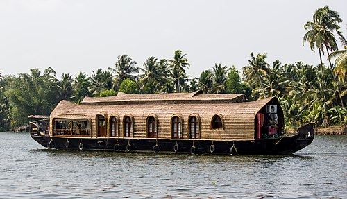

Kerala is a state on the Malabar Coast of India. It was formed on 1 November 1956 under the States
Reorganisation Act, which unified the country's Malayalam-speaking regions into a single state. Covering 38,863
km2 (15,005 sq mi), it is bordered by Karnataka to the north and northeast, Tamil Nadu to the east and south,
and the Laccadive Sea to the west. With 33 million inhabitants according to the 2011 census, Kerala is the
13th-most populous state in India. It is divided into 14 districts, with Thiruvananthapuram as the capital.
Malayalam is the most widely spoken language and, along with English, serves as an official language of the
state.
